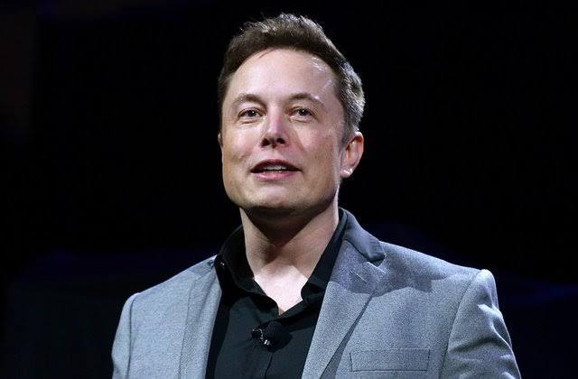

Elon Musk

Engineer, Technlogy Entrepreneur, Industrial Designer, and
Philanthropist.
- Elon Musk was born in South Africa in 1971.
- He became famous for starting Tesla Motors and SpaceX but he first made his fortune as a co-founder of PayPal.
- Musk provided a large amount of inspiration for the Hollywood character Tony Stark (a.k.a. Iron Man). In fact, parts of Iron Man 2 were actually filmed inside and outside of SpaceX. Musk even has a cameo in the film!
- At age 12, Musk taught himself computer programming and created a video game called Blastar, which he sold for $500.
- After graduating, Musk moved to California in order to begin graduate school in physics at Stanford University. He left Stanford after just two days, deciding instead to take advantage of the Internet boom, which was in full swing. After dropping out of grad school, Musk quickly established his first company --Zip2, which provided online newspapers with maps and business directories. He sold the company in 1999 for $307 million.
- In 1999, Musk co-founded X.com, an online payment company that eventually became PayPal before being acquired by eBay for $1.5 billion in stock (of which $165 million was given to Musk).
- Musk co-founded Tesla Motors, a company that designs and manufacturers electric sports cars. Tesla was able to succeed in the electric car market where other large manufacturers failed. He now serves as CEO and chief product architect at Tesla.
- Musk is one of the major driving forces behind SolarCity, a company founded by his cousins. He is also the largest shareholder of the company.
- Elon Musk also founded SpaceX (a.k.a. Space Exploration Technologies), a company that creates and manufactures space launch vehicles, with a particular focus in rocket technology. His aim is to reduce the cost of space flight in hopes of expanding human life beyond Earth.
- Musk initially found it impossible to get funding for SpaceX, which investors saw as a pipe dream. Musk channeled all his own money into the company to make SpaceX a reality (going against every piece of business advice ever written).
- SpaceX has a $1.6 billion contract with NASA to resupply (and eventually ferry people to) the International Space Station, effectively replacing the Space Shuttle.
- Musk has reduced the cost of reaching the International Space Station by 90%, bringing it down from $1 billion per mission to just $60 million.
- Musk aspires for his Falcon rocket to someday make space tourism and the colonization of Mars a realistic goal for mankind. The Falcon rocket gets its name from Star Wars' Millennium Falcon.
- Elon Musk has signed the Giving Pledge, in which pledges promise to donate the majority of their wealth to philanthropic efforts. The Giving Pledge has also been signed by Bill Gates, Sir Richard Branson, Warren Buffett, and Mark Zuckerberg, among others.
- Elon Musk owns Wet Nellie, a custom-built Lotus Esprit submarine car from the James Bond film, The Spy Who Loved Me.
- The Federation Aronautique Internationale, which is the world governing body for aerospace records, presented Musk with the FAI Gold Space Medal in 2010 for designing the first privately developed rocket to reach orbit. It's the organization's highest award (and has also been awarded to Neil Armstrong).
- In 2013, Musk introduced his latest endeavor -- the Hyperloop, a new form of transportation that could theoretically send people from San Francisco to Los Angeles in half an hour by way of pressurized tubes. Musk has said if no one else will build it, he will do it himself.
Source:Inc.com